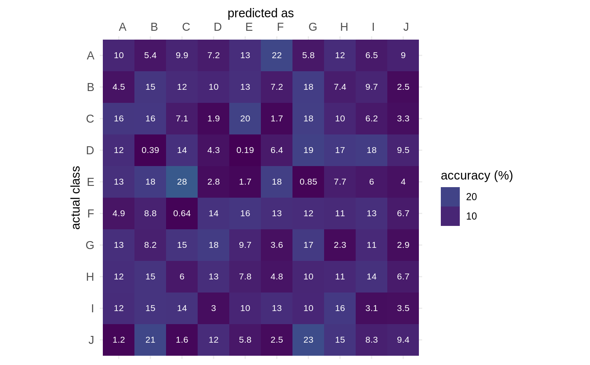

gg_CV.RdPlots as heatmap and with useful cosmetics
gg_CV( x, prop = TRUE, percent = TRUE, drop_zeros = TRUE, text = TRUE, text_colour = "white", text_size = 8, text_signif = 2, axis_size = 10, axis_x_angle = 0 ) # S3 method for default gg_CV( x, prop = TRUE, percent = TRUE, drop_zeros = TRUE, text = TRUE, text_colour = "white", text_size = 8, text_signif = 2, axis_size = 10, axis_x_angle = 0 ) # S3 method for stat_lda_full gg_CV( x, prop = TRUE, percent = TRUE, drop_zeros = TRUE, text = TRUE, text_colour = "white", text_size = 8, text_signif = 2, axis_size = 10, axis_x_angle = 0 ) # S3 method for matrix gg_CV( x, prop = TRUE, percent = TRUE, drop_zeros = TRUE, text = TRUE, text_colour = "white", text_size = 8, text_signif = 2, axis_size = 10, axis_x_angle = 0 )
| x | confusion matrix or |
|---|---|
| prop |
|
| percent |
|
| drop_zeros |
|
| text |
|
| text_colour |
|
| text_size |
|
| text_signif |
|
| axis_size |
|
| axis_x_angle |
|
when a matrix is passed, it assumes that it is:
squared
rows are for actual classes
columns for predicted classes
class accuracies are calculated per actual classes, ie rowwise
# works fine on matrices too # set.seed(2329) # for the sake of replicability m <- matrix(sample(1:100), 10) gg_CV(m)#> # A tibble: 100 x 8 #> actual predicted n prop n_class prop_class n_total label #> <chr> <chr> <int> <dbl> <int> <dbl> <int> <dbl> #> 1 A A 45 10.1 446 0.0883 5050 10 #> 2 B A 23 4.47 514 0.102 5050 4.5 #> 3 C A 76 15.8 480 0.0950 5050 16 #> 4 D A 63 12.3 514 0.102 5050 12 #> 5 E A 47 13.4 352 0.0697 5050 13 #> 6 F A 31 4.94 627 0.124 5050 4.9 #> 7 G A 68 13.0 525 0.104 5050 13 #> 8 H A 73 12.5 586 0.116 5050 12 #> 9 I A 69 12.1 572 0.113 5050 12 #> 10 J A 5 1.15 434 0.0859 5050 1.2 #> # … with 90 more rows